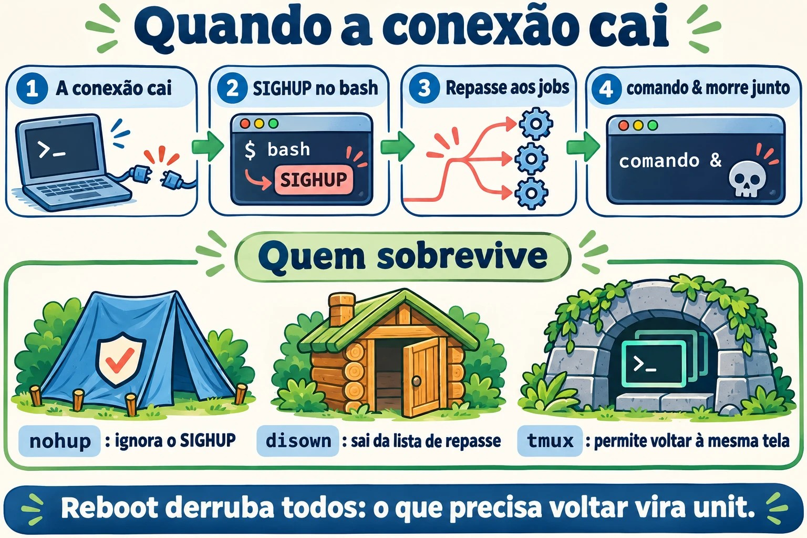
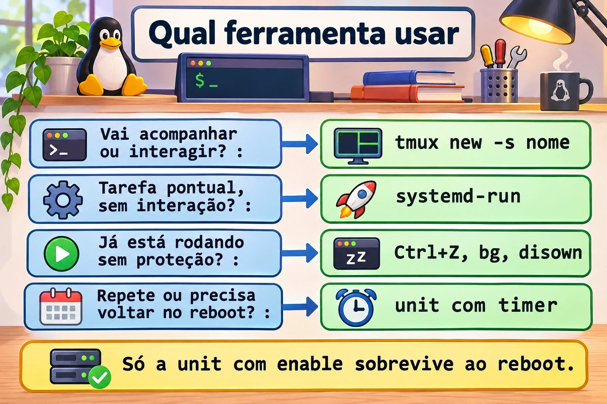
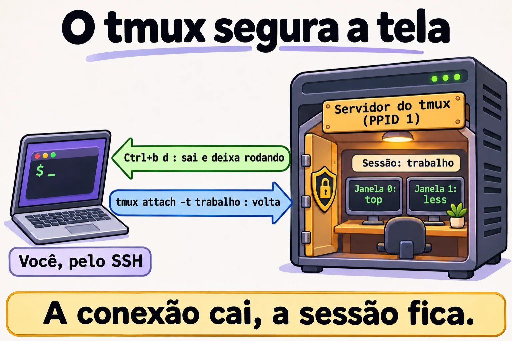
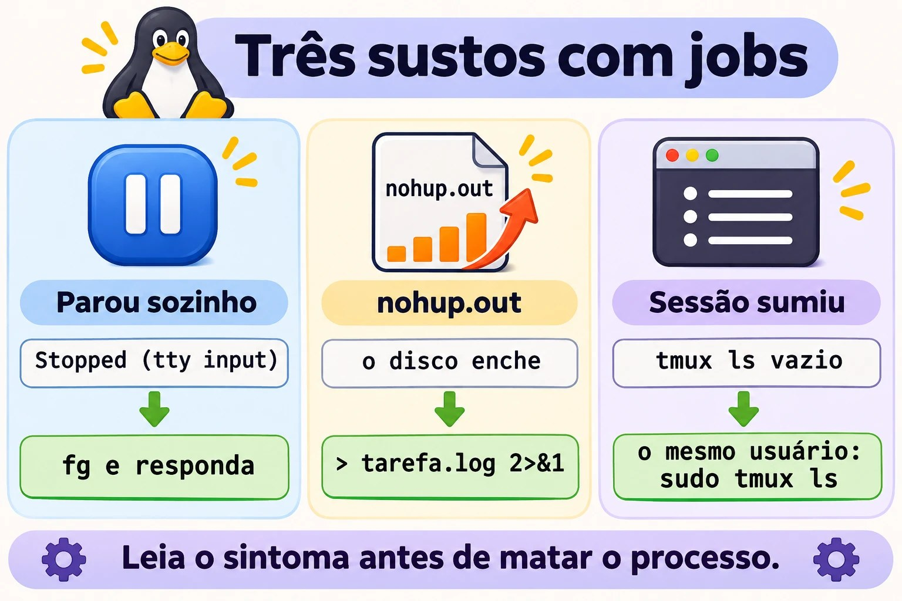

Aula 7.2 · Jobs e sessões
A atualização estava em 80% quando a VPN caiu. Quem já viveu isso sabe o tamanho do problema. Nesta aula você entende por que um comando morre junto com a conexão e escolhe a ferramenta certa para cada tarefa longa: job, nohup, disown, tmux ou systemd-run.
Núcleo desta aula: controlar jobs com
&, Ctrl+Z,jobs,fgebg; entender o que o SIGHUP faz quando o terminal some; usarnohupsem encher o disco; trabalhar notmuxe voltar para a sessão depois da queda; e saber quando a tarefa merece ser um serviço. O resto é aprofundamento.
| Ficha | |
|---|---|
| Módulo | M7 · Processos e desempenho, aula 2 de 3 |
| Quando | Semana 11 |
| Ao final | A sua tarefa longa sobrevive à queda do SSH, e você volta a ela de onde estiver |
| Pré-requisitos | Aulas 0.2, 2.3 e 7.1 |
| Tempo | cerca de 2h |
| Snapshots | m7a2-inicio e m7a2-fim na rocky-lab e na debian-lab |
1 · Aquecimento
Responda antes de ler.
- Que sinal o Ctrl+C envia? E qual seria o código de saída?
- Um comando foi iniciado com
&e você fechou a janela do SSH. Ele continua rodando? - Se você sair com
exitem vez de fechar a janela, a resposta muda?
2 · Por que importa
| O chamado | A resposta errada | O que ela causa |
|---|---|---|
"O dnf upgrade parou no meio quando a conexão caiu" | Rodar direto no SSH de novo | A próxima queda pode deixar o sistema pela metade |
| "O disco encheu e ninguém sabe por quê" | Procurar só nos logs | Um nohup.out gigante, esquecido na pasta de alguém |
| "O script parou sozinho, sem erro" | Rodar de novo | Ele está em segundo plano esperando uma resposta que ninguém vê |
"Deixei no tmux e sumiu" | Achar que o tmux falhou | Foi aberto como root, ou o servidor reiniciou |
"Todo dia eu abro o tmux para rodar esse backup" | Continuar assim | Tarefa repetida merece serviço e agendamento |
3 · Modelo mental
A conexão SSH é um fio de telefone entre você e o shell. Quando o fio é cortado, o shell recebe o aviso (SIGHUP) e o repassa aos jobs dele. O
nohupe odisownsão jeitos de tapar o ouvido de um processo para esse aviso. Otmuxfaz outra coisa: instala um ramal dentro do servidor. O seu programa fala com o ramal, o seu SSH só olha para ele, e quando o fio cai o ramal continua atendendo.
ssh ── sshd ── bash (líder da sessão) ── pts/0
├─ vim primeiro plano
└─ backup.sh segundo plano
conexão cai → o pts some → SIGHUP no bash → o bash repassa SIGHUP aos jobs → backup morre
ssh ── sshd ── bash ── cliente tmux ┄┄ olha para ┄┄ servidor tmux (pai = PID 1)
└─ bash ── backup.sh
conexão cai → morre só o cliente → o servidor e o backup continuam → tmux attach

tmux não protege o processo do sinal: ele tira o processo do caminho do sinal.Ponte Windows
| No Windows | No Linux | Onde a comparação engana |
|---|---|---|
| Desconectar do RDP, com os programas abertos | Ctrl+b d no tmux | Sem tmux, cair o SSH não equivale a desconectar do RDP: os processos recebem SIGHUP |
| Fazer logoff do RDP | tmux kill-session | Encerra tudo o que estava na sessão |
Start-Job no PowerShell | comando & | O job do PowerShell depende da sessão, como o do bash |
| Tarefa agendada para rodar uma vez | systemd-run | O systemd-run executa na hora e registra a saída no journal |
| Reinício do Windows | Reboot | A sessão do tmux também não sobrevive |
4 · O essencial
Teclas e comandos de job
| Quero... | Como |
|---|---|
| Rodar em segundo plano | comando & |
| Interromper (SIGINT) | Ctrl+C |
| Pausar (SIGTSTP) | Ctrl+Z |
| Ver os jobs, com PID | jobs -l |
| Trazer para a frente | fg %1 |
| Continuar em segundo plano | bg %1 |
| Encerrar um job | kill %1 |
| Esperar os jobs terminarem | wait |
| Tirar da lista do shell | disown %1 |
Qual ferramenta
| Ferramenta | Sobrevive à queda do SSH | Sobrevive ao reboot | Dá para voltar a ver | Onde fica a saída |
|---|---|---|---|---|
comando & | Não | Não | Só no mesmo shell | No terminal |
nohup comando & | Sim | Não | Não | nohup.out, se o terminal era a saída |
disown | Sim | Não | Não | No terminal que sumiu |
tmux ou screen | Sim | Não | Sim | Na tela da sessão |
systemd-run | Sim | Não | Pelo journal | journalctl -u NOME |
Unit com enable e timer | Sim | Sim | Pelo journal | journalctl -u NOME |
Como escolher: trabalho interativo, ou algo que precisa ser acompanhado, vai no tmux. Tarefa pontual sem interação vai no systemd-run. Se esqueceu de usar tudo isso e o comando já está rodando, Ctrl+Z, bg e disown salvam. Tarefa que se repete vira unit com timer.


tmux
| Quero... | Como |
|---|---|
| Criar uma sessão com nome | tmux new -s nome |
| Sair e deixar rodando | Ctrl+b e depois d |
| Listar as sessões | tmux ls |
| Voltar | tmux attach -t nome |
| Nova janela | Ctrl+b e c |
| Próxima janela | Ctrl+b e n |
| Dividir lado a lado | Ctrl+b e % |
| Dividir em cima e embaixo | Ctrl+b e " |
| Trocar de painel | Ctrl+b e o |
| Rolar a tela | Ctrl+b e [, com q para sair |
| Encerrar a sessão | tmux kill-session -t nome |
O screen faz o mesmo com outros comandos: screen -S nome, Ctrl+a e d, screen -ls, screen -r nome. Você vai encontrá-lo em servidores antigos.
Rocky × Debian
| Rocky 9 | Debian 13 | |
|---|---|---|
tmux | dnf install tmux | apt install tmux |
screen | Pacote do EPEL | apt install screen |
| Comportamento de jobs e SIGHUP | O mesmo, é do bash | O mesmo, é do bash |
5 · Lab guiado
Você vai precisar de duas janelas SSH para a rocky-lab: a A, que será derrubada, e a B, que observa.
Passo 0 · Snapshots e preparo. No Proxmox: qm snapshot 201 m7a2-inicio e qm snapshot 202 m7a2-inicio. Na janela A:
sudo dnf install -y tmux
mkdir -p ~/lab72 && cd ~/lab72
cat > conta.sh <<'EOF'
#!/bin/bash
while true; do
date +%T >> "$1"
sleep 1
done
EOF
chmod +x conta.shPasso 1 · Controlar jobs.
sleep 301 &
sleep 302O segundo comando prende o terminal. Tecle Ctrl+Z, e continue:
jobs -l
bg %2
jobs -l
fg %1Tecle Ctrl+C para encerrar o sleep 301. Depois:
jobs
kill %2
jobsRepare no estado: Running, depois Stopped com o Ctrl+Z, e Running de novo com o bg.
Passo 2 · O teste da queda. Na janela A, inicie quatro contadores, cada um protegido de um jeito:
cd ~/lab72
./conta.sh a-sem-nada.log &
nohup ./conta.sh b-nohup.log > /dev/null 2>&1 &
./conta.sh c-disown.log &
disown
jobs -l
tmux new -d -s lab './conta.sh d-tmux.log'Agora feche a janela A no X, sem digitar exit. Na janela B, depois de alguns segundos:
cd ~/lab72
for f in *.log; do echo "$f $(tail -n 1 "$f")"; done; date +%T| Arquivo | Esperado | Por quê |
|---|---|---|
a-sem-nada.log | Parou na hora da queda | O bash repassou o SIGHUP ao job |
b-nohup.log | Continua atualizando | O nohup faz o processo ignorar o SIGHUP |
c-disown.log | Continua atualizando | O disown tirou o job da lista de quem recebe o repasse |
d-tmux.log | Continua atualizando | O processo mora no servidor do tmux |
Encerre o que sobrou, na janela B:
pkill -f 'conta.sh b-nohup'
pkill -f 'conta.sh c-disown'
tmux kill-session -t labPasso 3 · A surpresa do exit. Abra outra janela A:
cd ~/lab72
./conta.sh e-exit.log &
shopt huponexit
exitNa janela B, repita o for do Passo 2. O e-exit.log continua atualizando. Com huponexit em off, que é o padrão, o bash não avisa os jobs quando você sai por exit. O SIGHUP do Passo 2 veio da queda do terminal. Por isso alguém jura que "funcionava ontem": ontem saiu por exit, hoje a conexão caiu.
Se a janela do SSH travar ao sair, tecle Enter, depois ~ e ., que encerram o cliente SSH. Limpe:
pkill -f 'conta.sh e-exit'Passo 4 · Trabalhar no tmux. Numa janela nova:
tmux new -s trabalhoDentro dele: rode top; tecle Ctrl+b e c, e rode ls -l /etc | less; tecle Ctrl+b e n para voltar e Ctrl+b e % para dividir a tela; alterne com Ctrl+b e o. Saia com Ctrl+b e d. Depois:
tmux ls
ps -o pid,ppid,cmd -p "$(tmux display-message -p '#{pid}')"
tmux attach -t trabalhoO top continua ali, do jeito que você deixou. O PPID do servidor normalmente é 1: ele não depende da sua conexão. Ao terminar, Ctrl+b e d, e tmux kill-session -t trabalho.


Passo 5 · Já comecei sem proteção. Numa janela nova:
~/lab72/conta.sh ~/lab72/f-resgate.logTecle Ctrl+Z, e continue:
bg
disownFeche a janela no X. Na janela B, confira que o f-resgate.log continua atualizando e encerre com pkill -f 'conta.sh .*f-resgate'. É o resgate para quando você percebe tarde demais.
Passo 6 · Uma tarefa que vira unidade.
sudo systemd-run --unit=lab-tarefa bash -c 'for i in 1 2 3 4 5 6; do echo "passo $i"; sleep 5; done'
systemctl status lab-tarefa --no-pager | head -n 6
sudo journalctl -u lab-tarefa -fSaia do journalctl com Ctrl+C, depois que os seis passos aparecerem. A tarefa não dependeu do seu terminal, e o registro continua no journal depois que ela termina. Veja com sudo journalctl -u lab-tarefa --no-pager | tail -n 8.
Passo 7 · debian-lab. Instale o tmux e repita o Passo 2. O resultado é o mesmo, porque o comportamento vem do bash e do kernel.
Decida 1
Você vai rodar dnf upgrade por SSH em um servidor remoto, através de VPN instável. Como faz?
A) Direto no SSH, porque costuma ser rápido. B) nohup dnf -y upgrade &. C) Dentro do tmux, acompanhando.
Marque uma opção antes.
| Se você marcou | Resultado | Por quê |
|---|---|---|
| A | Risco real | Uma queda no meio pode interromper a transação |
| B | Sobrevive, mas às cegas | Você não vê perguntas nem erros na hora, e o -y aceita tudo |
| C | Certo | Sobrevive à queda, e você volta para a mesma tela e vê como terminou |
Para fixar: trabalho que você precisa acompanhar vai no tmux, sempre.
Decida 2
Toda noite alguém entra no servidor, abre o tmux e dispara um script de cópia. O que você propõe?
A) Continuar, porque funciona. B) Um nohup no .bashrc. C) Uma unit com timer do systemd, com a saída no journal.
Marque uma opção antes.
| Se você marcou | Resultado | Por quê |
|---|---|---|
| A | Depende de uma pessoa | Em férias ou feriado, a cópia não roda |
| B | Pior | Dispara a cada login, sem controle e sem registro |
| C | Certo | Roda sozinho, volta depois do reboot e deixa histórico. Você vai fazer isso em detalhe mais adiante no curso |
Para fixar: o tmux serve para trabalho humano. Rotina é serviço.
6 · Quebre e conserte


Quebra 1 · O script parou sozinho
cat > ~/lab72/pergunta.sh <<'EOF'
#!/bin/bash
read -p "Continuar? " resposta
echo "$(date +%T) resposta: $resposta" >> ~/lab72/resposta.log
EOF
chmod +x ~/lab72/pergunta.sh
~/lab72/pergunta.sh &
sleep 1
jobs -lSintoma: Stopped (tty input), ou Fermato (input da terminale) numa VM em italiano, e o resposta.log não aparece.
Diagnóstico: um processo em segundo plano tentou ler do terminal e o kernel o parou. No ps, o estado é T.
Conserto: fg, e responda. Num script automatizado, entregue a resposta na entrada, como em echo s | ~/lab72/pergunta.sh &.
Na vida real: é o motivo de sudo comando & ficar parado esperando a senha. Rode sudo -v antes, ou faça a tarefa dentro do tmux.
Quebra 2 · O nohup.out escondido
cd ~/lab72
nohup bash -c 'for i in {1..20000}; do echo "linha $i"; done' &
sleep 2
ls -lh nohup.outSintoma: apareceu um arquivo que ninguém pediu. Num processo que roda por semanas, ele enche o disco.
Diagnóstico: procure onde estão e quem está escrevendo: sudo find / -xdev -name nohup.out -size +10M 2>/dev/null e sudo fuser -v nohup.out.
Conserto: rode com a saída definida, como em nohup comando > /var/log/tarefa.log 2>&1 &. Com o processo vivo, esvazie com : > nohup.out. Se você apagar o arquivo, o espaço só volta quando o processo terminar.
Quebra 3 · A sessão que sumiu
sudo tmux new -d -s raiz 'sleep 600'
tmux ls
sudo tmux lsSintoma: como rodrigo, o tmux ls responde no server running, error connecting to /tmp/tmux-UID/default ou não mostra a sessão raiz. Com sudo, ela aparece.
Diagnóstico: cada usuário tem o próprio servidor, com um socket em /tmp/tmux-UID/.
Conserto: volte como o mesmo usuário que criou a sessão: sudo tmux attach -t raiz. Para encerrar, sudo tmux kill-session -t raiz.
Na vida real: a outra causa comum é o reboot. Confira com uptime. O tmux não sobrevive a ele.
Limpeza
pkill -f conta.sh
pkill -KILL -f pergunta.sh
tmux kill-server 2>/dev/null
sudo tmux kill-server 2>/dev/null
pgrep -af 'conta.sh|pergunta.sh'O último comando não deve mostrar nada. O -KILL está ali porque um processo parado só trata o SIGTERM quando volta a rodar. A pasta ~/lab72 pode ficar.
7 · Armadilhas
| Armadilha | O que acontece | Como evitar |
|---|---|---|
Confiar em comando & numa rede instável | O job morre com a queda | Use tmux |
Testar com exit e concluir que está protegido | A queda real se comporta de outro jeito | Teste fechando a janela |
nohup sem redirecionar | O nohup.out cresce até encher o disco | Sempre > arquivo 2>&1 |
| Apagar arquivo que ainda está aberto | O espaço não volta | Esvazie com : > arquivo |
sudo comando & | Fica parado pedindo a senha | sudo -v antes, ou tmux |
Abrir o tmux como root e procurar como usuário | "Sumiu" | Mesmo usuário nos dois |
Achar que o tmux sobrevive ao reboot | A sessão não existe mais | Tarefa que precisa voltar vira unit |
tmux dentro de tmux | O Ctrl+b vai para o de fora | Saia do interno ou tecle Ctrl+b duas vezes |
| Política que encerra processos ao sair | Até o tmux pode morrer | Confira KillUserProcesses em /etc/systemd/logind.conf |
8 · Quiz
Responda sem olhar. O gabarito está no fim da aula.
- Qual a diferença entre Ctrl+C e Ctrl+Z?
- Um comando já está rodando sem proteção. Quais três passos o salvam da queda do SSH?
- Por que um job iniciado com
&pode sobreviver aoexite morrer com a queda da conexão? - O que acontece com a saída de
nohup comando &quando o terminal é a saída? - Por que o
tmuxcontinua depois que o SSH cai? - Como escolher entre
tmux,systemd-rune uma unit com timer?
9 · Cola
Para saber de cor:
| Quero... | Comando |
|---|---|
| Segundo plano | comando & |
| Pausar e continuar atrás | Ctrl+Z, depois bg |
| Trazer para a frente | fg %N |
| Resgatar da queda | Ctrl+Z, bg, disown |
| Sessão nova | tmux new -s nome |
| Sair deixando rodando | Ctrl+b e d |
| Voltar | tmux attach -t nome |
| Listar sessões | tmux ls |
Para consultar:
| Quero... | Comando |
|---|---|
| Nohup com saída definida | nohup comando > arquivo 2>&1 & |
| Tarefa como unit temporária | sudo systemd-run --unit=NOME comando |
| Saída da unit temporária | journalctl -u NOME |
Ver o texto do tmux sem entrar | tmux capture-pane -pt nome |
| Ver se o shell avisa os jobs | shopt huponexit |
| Encerrar o cliente SSH travado | Enter, ~, . |
| Screen | screen -S nome, Ctrl+a e d, screen -r nome |
| Sessões de login | loginctl list-sessions |
Flashcards:
- Fio cortado → SIGHUP no shell, que repassa aos jobs.
nohup→ ignora o SIGHUP; a saída vai paranohup.out.disown→ tira o job da lista de repasse.tmux→ o processo mora num servidor que não depende do SSH.- Rotina → unit com timer, não
tmux.
10 · Checklist e fechamento
- [ ] Uso
&, Ctrl+Z,jobs,fgebgsem pensar - [ ] Explico o que o SIGHUP faz quando a conexão cai
- [ ] Sei a diferença entre
exite queda do terminal - [ ] Uso
nohupsempre com a saída definida - [ ] Crio, deixo e volto a uma sessão do
tmux - [ ] Resgato um comando que já começou sem proteção
- [ ] Sei quando a tarefa deve virar serviço
Último exercício, sem olhar a aula: na debian-lab, crie uma sessão tmux com duas janelas. Rode um contador em uma delas, feche a conexão no X, reconecte e volte para a mesma tela. Encerre a sessão ao final.
Snapshot de fim (no Proxmox):
qm snapshot 201 m7a2-fim
qm snapshot 202 m7a2-fim11 · Na vida real
Missão, só leitura. Num servidor Linux que você administre (ou com autorização), rode apenas:
who
loginctl list-sessions --no-pager
tmux ls 2>/dev/null
command -v tmux screen
grep -i KillUserProcesses /etc/systemd/logind.conf
sudo find / -xdev -name nohup.out -size +10M 2>/dev/nullPerguntas para responder:
- Quem está conectado agora, e desde quando?
- O
tmuxou oscreenestá instalado? - Existe algum
nohup.outgrande esquecido? - O
KillUserProcessesestá comentado ou definido comono?
Diário: anote se o servidor tem uma ferramenta pronta para a sua próxima tarefa longa. Se não tiver, inclua a instalação numa janela de manutenção.
Amanhã, sem olhar: escreva a sequência para criar, deixar e retomar uma sessão do tmux.
12 · Aprofundar quando quiser
~/.tmux.conf: trocar a tecla de prefixo, ligar o mouse e aumentar o histórico.tmux-resurrect: salvar o layout das sessões. Os processos, em si, não voltam.loginctl enable-linger: manter os serviços do usuário depois do logout.setsid: iniciar um processo em uma sessão nova, sem terminal de controle.mosh: cliente remoto que tolera troca de rede e de IP.
DeepTutor (http://10.1.0.149:3782, KB "Curso Linux Sysadmin"):
!explica o que acontece com um job quando a sessão SSH cai!feynman a diferença entre nohup, disown e tmux!quiz Aula 7.2, 5 perguntas sobre jobs e tmux
Gabarito comentado
Aquecimento
- SIGINT, e o código de saída costuma ser 130 (128 + 2).
- Normalmente não. Quando o terminal some, o bash recebe SIGHUP e o repassa aos jobs.
- Muda. No
exit, comhuponexitemoff, o bash não avisa os jobs, e eles continuam.
Quiz
- O Ctrl+C manda SIGINT, normalmente encerrando o programa. O Ctrl+Z manda SIGTSTP, que pausa o programa e devolve o shell.
- Ctrl+Z,
bgedisown. - Porque quem envia o aviso é diferente. Na queda do terminal, o bash recebe SIGHUP e repassa. No
exit, com a opção padrão, ele simplesmente sai. - Vai para
nohup.out, na pasta atual. Se não der para criar ali, vai para~/nohup.out. - Porque o programa roda como filho do servidor do
tmux, que não depende da conexão. A queda elimina apenas o cliente. tmuxpara trabalho que uma pessoa acompanha.systemd-runpara tarefa pontual sem interação, com registro no journal. Unit com timer para o que se repete ou precisa voltar depois do reboot.